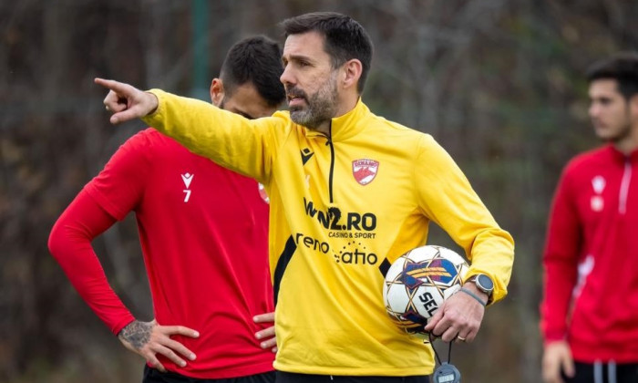

Victorie importantă împotriva rivalei Steaua
Echipa Dinamo București a obținut o victorie crucială împotriva rivalei istorice Steaua București, cu scorul de 2-1, într-un meci tensionat și plin de suspans.
Citește mai mult

Noul antrenor aduce schimbări majore
Antrenorul nou-venit al echipei Dinamo, Željko Kopić, a adus schimbări semnificative în abordarea echipei, pregătindu-se pentru sezonul următor.
Citește mai mult